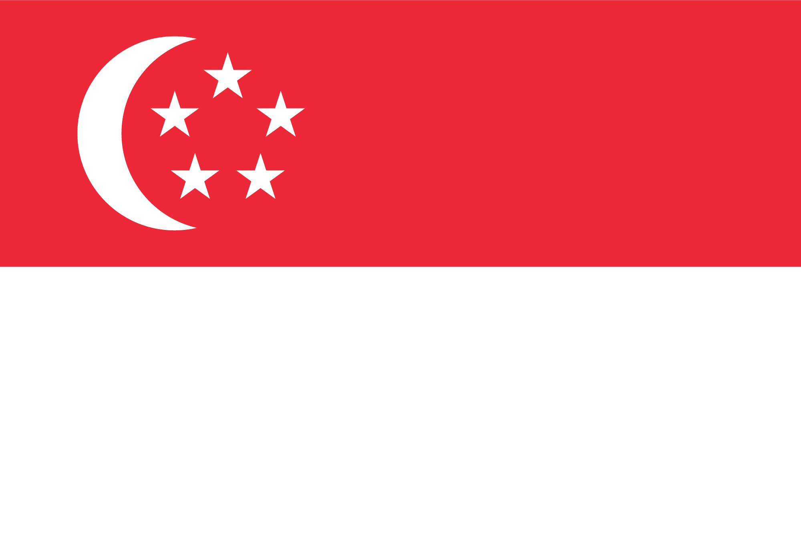
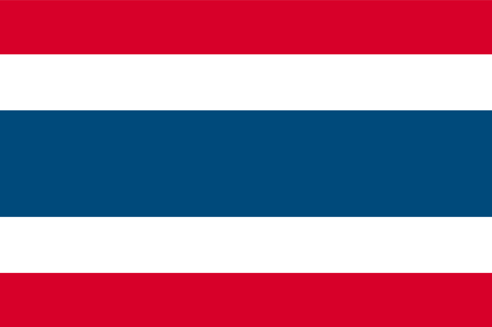
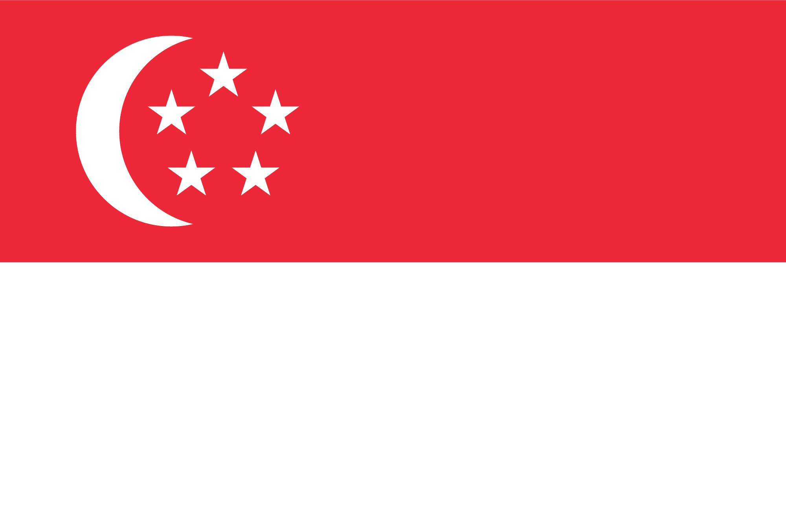
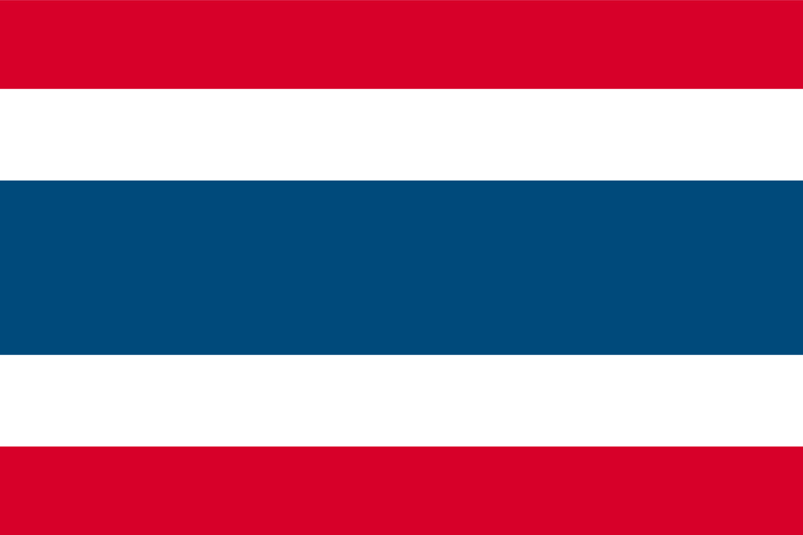

The Passport That Refused to Travel
How I Almost Missed My Trip to Australia Because of… Myself
I was all set for an Australia trip with my friends—me flying from Tokyo, them from Osaka. I arrived at Haneda after
work, grabbed a quick dinner, and headed to the immigration gate.
That’s when things went sideways. The officer called a colleague, whispered something, and then said:
“Could you come with me, please?”
My stomach sank. Had I done something wrong? In the office, the verdict came:
“This passport is invalid.”
Invalid?! Then it hit me—years ago, I lost my passport, got a new one… and somehow, in the chaos of moving, I had
grabbed the old one. Yes, I had been trying to travel with an expired passport.
Cue the dramatic facepalm.
I went home by taxi in the pouring rain past midnight, called my friends to break the bad news, and cried a little. But,
of course, I didn’t give up. The next morning, I dug through mountains of luggage, found the correct passport, booked a
new flight, and finally made it to Australia.
The takeaway? If your passport could talk, mine would have yelled: “Not today, buddy!”
 


